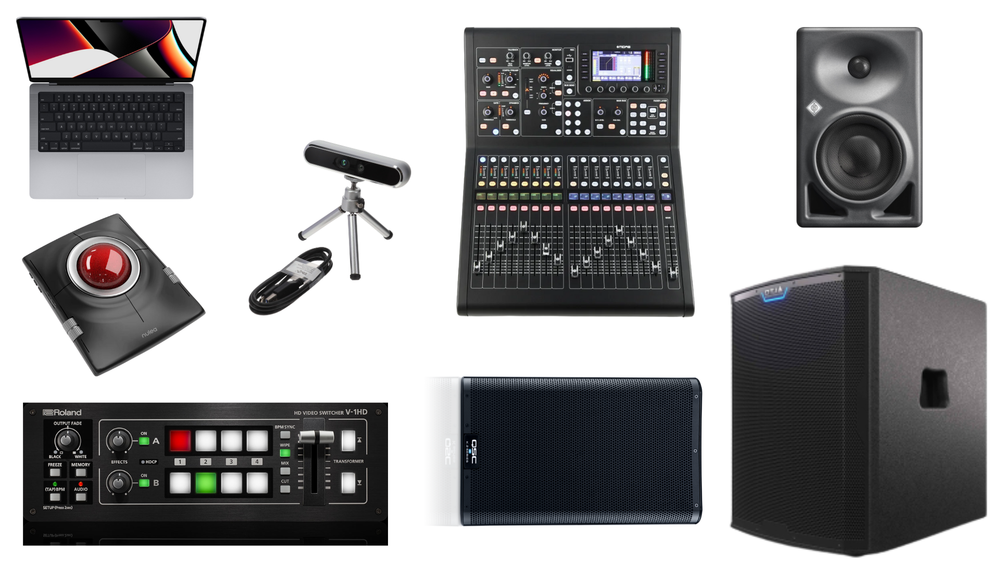
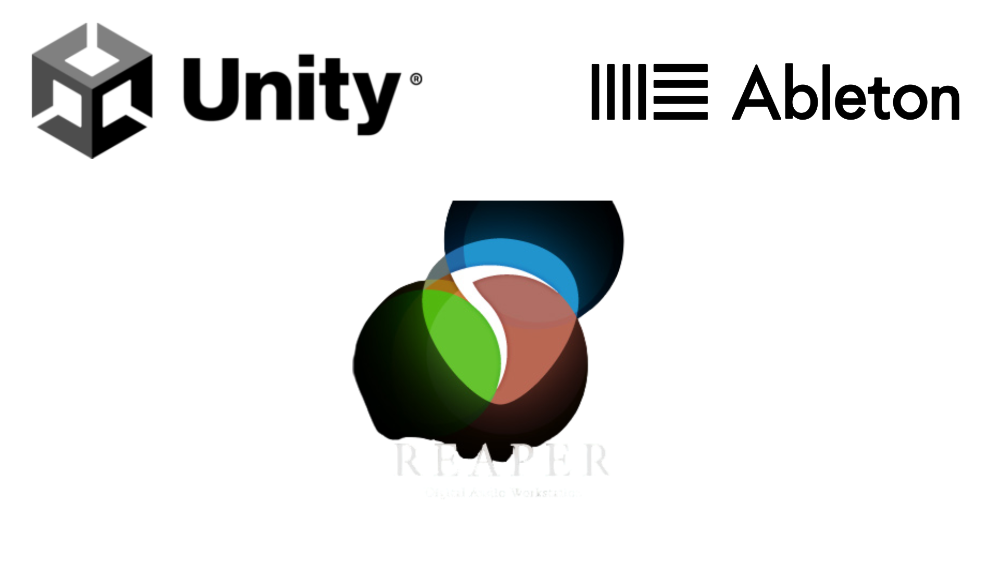
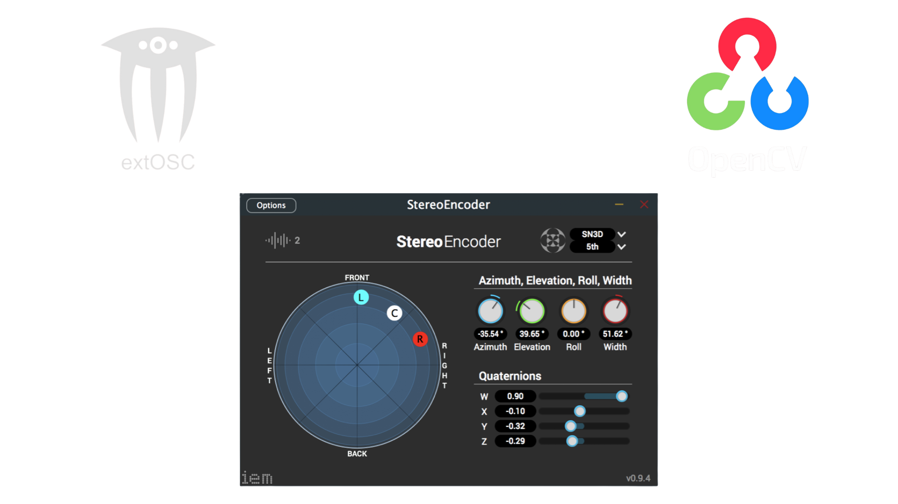

Tech Details
Hardware
- MacBook Pro 14" (Apple Silicon), main control computer running Ableton Live 12, Unity + OSC routing to Reaper
- Midas M32, used as both the audio interface and multichannel mixer
- Neumann KH 120, primary spatial speakers (head-level arc and front overhead)
- QSC K10.2, floor-level reinforcement
- Alto Professional TS18C Subwoofer, low-end reinforcement
- Projector, front-wall visuals (model varies)
- Roland V-1HD Video Mixer, blends camera feed and OpenCV output with Unity projections
- Intel RealSense D455f Depth Camera, crowd tracking and centroid estimation
- Nulea M512 Wireless Trackball Mouse, spatial-panning controller

Software
- Unity, visual environment, shader system, OSC output
- Ableton Live, 8-scene stem engine
- Reaper, IEM spatial audio processing
Software Icons

Libraries / Plugins
- IEM Ambisonics Suite (Object-Based Panner, Scene Rotator, In-Ear, etc.)
- #extOSC – Open Sound Control, system-wide OSC routing
- OpenCV, depth tracking and centroid extraction
Libraries Graphic

Real-Time Matrix VFX

System Diagram / Data Flow

Interaction Design
User Actions
- Move through physical space
- Use the Nulea trackball to spatialize stems
- Toggle stem groups and mirror modes
- Observe visuals reacting to movement and input
System Responses
- Real-time spatial changes
- Matrix shader effects and avatar feedback
- Tempo changes based on group clustering
- Progression through eight stem sets
Implementation Details
Unity
- Matrix shader environment
- 3D speaker-array visualization
- Data-avatar representation
- See Unity tab.
Reaper
- Four routed tracks: Drums, Bass, Harmony, Melody
- IEM suite for spatialization
- OSC parameter mapping
Ableton
- Eight musical scenes
- Outputs four stems directly to Reaper
- Receives tempo modulation from Unity
BPDistributions.py
- see BPDistrubtion tab
Requirements & Setup
Software Needed
- Unity
- Reaper + IEM plugins
- Ableton Live
- Python 3
Hardware Connections
- M32 → all speakers
- Projector → HDMI
- RealSense camera → USB-C
- Trackball → USB Dongle or Bluetooth
Running the System
- Launch Reaper
- Load Ableton stem sets
- Open Unity scene
- Confirm OSC routing
- Begin interaction